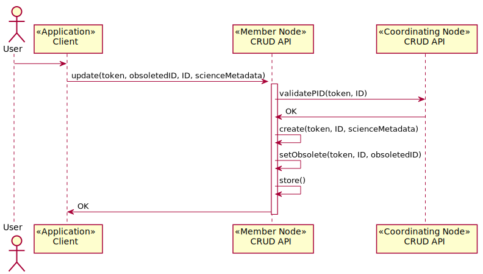

Use Case 05 - Update Science Metadata¶
- Revisions
View document revision history.
- Goal
Update or delete science metadata record on a Member Node.
- Summary
Science metadata is immutable in DataONE. As such, modification involves generating a new science metadata record and indicating that the new record supersedes an existing record, and deletion involves deprecation so that the old metadata record is no longer visible during normal discovery and access.
- Actors
Member Node, additional Member Nodes, Coordinating Nodes
- Preconditions
User is authenticated
MN is registered and is monitored
Science metadata being deleted / updated document exists
- Triggers
User calls
MN_crud.update()User calls
MN_crud.delete()
- Post Conditions
System metadata for science metadata object(s) updated
Replacement science metadata propagated through the system
Search indexes updated
Operation recorded in logs
Watchers notified of change
Figure 2. Use case 04.
Figure 3. Create, update, delete, search metadata or data object in Member Node.
Notes
Q. Are IDs are pegged to versions? If so, update might differ more radically from create. A. Yes. Create involves creation of a new science metadata object, update involves deprecating an existing science metadata document with a replacement, delete involves setting system metadata properties.
Q. Should queuing of a submission within a member node be required for success? (We assume yes, to guarantee replication of submissions). A. No. Successful update is handled by the Member Node, if the new science metadata can be created and the system metadata can be updated, then the change should be considered complete. The Member Node synchronization process will ensure that the changes are propagated to the wider system.